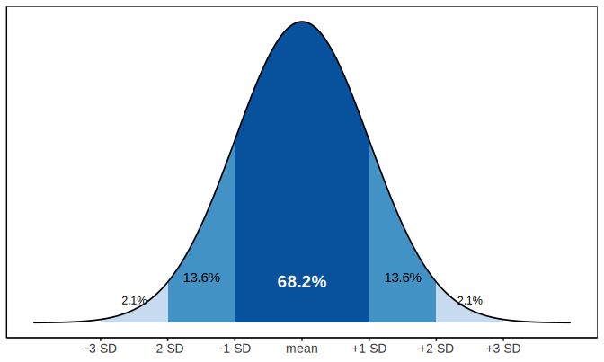

Mean, median, spread, and describing groups the tidy way
2026-09-21
filter(), select(), mutate(), arrange() — the core wrangling verbs%>%leaf_df — shade, mass_g, petiole_mm, thickness_mm, paper_mass_gNote
✅ Key idea from Lecture 05
You can already reshape the data into exactly the rows and columns you need. Today we learn to describe what’s in it — one number at a time, then all at once.
Biological prediction: Leaves on the shady side of a tree will be larger and heavier to capture more of the limited light.
| Hypothesis | |
|---|---|
| H₀ — null | No difference in leaf size between sunny and shady sides |
| Hₐ — alternate | Leaf size differs between sunny and shady sides |
Plan for this unit:
Statistics helps us decide which hypothesis is better supported by the data.
References:
Both W&S PDFs are in the course readings/ folder.
This lecture runs in two chunks. After each chunk you switch to the activity and type the code yourself into your R script.
For every code block, do three things:
Note
✅ Why bother?
sum(!is.na(x)) yourself, instead of pasting it, is what makes you notice why it’s there instead of length(x).Note
Install once — load every session
install.packages("skimr")library(skimr) activates it.Tip
📂 Activity skeleton: 06_summary_stats_skeleton.R has this loading step, plus both source() lines below, already done for you.
summary_stats()We will cover: counting correctly with sum(!is.na()), a reusable summary_stats() helper, and using it one group at a time.
\[\bar{x} = \frac{\sum_{i=1}^{n} x_i}{n}\]
Example:
Values: 5, 6, 7, 8, 50 → mean = 15.2
Is 15.2 a fair summary? Not really — the outlier dominates!
Why it matters:
📖 Whitlock & Schluter, Ch. 3 — Describing Data; R4DS §13 — Numbers
The middle value when data are sorted
| Sorted data | Median |
|---|---|
| 5, 6, 7, 8, 50 | 7 |
| 5, 6, 7, 8, 50, 51 | (7 + 8) / 2 = 7.5 |
skim() reports the median for us later today — no code to type by handsum(!is.na())length(x) counts all positions — including NAis.na(x) → TRUE for each NA; !is.na(x) flips it to TRUE for real valuessum(!is.na(x)) counts those TRUEs → the correct npaper_mass_g measurementTip
Best practice: always use sum(!is.na(x)) when you need n — even when you think there are no NAs. It is exactly what our summary_stats() function below uses.
\[s^2 = \frac{\sum_{i=1}^{n}(x_i - \bar{x})^2}{n - 1}\]
Larger variance = more spread = more uncertainty
Note
Why \(n - 1\), not \(n\)?
Estimating \(\bar{x}\) already used up one piece of information, leaving only \(n - 1\) degrees of freedom to estimate spread. Dividing by \(n - 1\) instead of \(n\) corrects for that, so \(s^2\) comes out an unbiased estimate of the population variance.
\[s = \sqrt{s^2} = \sqrt{\frac{\sum(x_i - \bar{x})^2}{n-1}}\]

For a normal distribution, each band is a fixed percent of the data — no matter what the mean or SD actually are.
\[SE = \frac{s}{\sqrt{n}}\]
| Describes | |
|---|---|
| SD | spread of individual data points |
| SE | precision of the sample mean |
We report SE when making claims about group means.
📖 Whitlock & Schluter, Ch. 4 — Estimating with Uncertainty
summary_stats()summary_stats <- function(data, variable) {
data %>%
summarize(
n = sum(!is.na({{ variable }})),
mean = mean({{ variable }}, na.rm = TRUE),
variance = var({{ variable }}, na.rm = TRUE),
sd = sd({{ variable }}, na.rm = TRUE),
se = sd / sqrt(n),
ci_lower = mean - qt(0.975, df = n - 1) * se,
ci_upper = mean + qt(0.975, df = n - 1) * se,
.groups = "drop"
) %>%
mutate(across(c(mean, variance, sd, se, ci_lower, ci_upper),
~ round_half_up(.x, 2)))
}n, mean, variance, sd, se, and a 95% CIn = sum(!is.na()) — no length() trap{ variable } lets you pass a bare column name in, like mass_ggroup_by()-ed, every group at oncethemes/summary_stats_function.R — same themes/ folder as your ggplot theme filefilter() + summary_stats()filter(shade == "sunny") — keeps only sunny rowssummary_stats(mass_g) — no pull(), no vector, no hand-written math"sunny" for "shady" to get the other side🛑 Do Activity Parts 1–3 now
Load the data, work the NA problem, source summary_stats(), and use it on one group with filter(). Predict each output, type it, then run it.
We will cover: group_by() + summary_stats() for every group at once, fast overviews with skimr, and — if time allows — across() for many columns at once.
🛑 After this chunk: Activity Parts 4–6.
group_by() + summary_stats()Note
🔮 Predict first: How many rows will this return? (Hint: how many values does shade take?) Predict the number before you run it.
# A tibble: 2 × 8
shade n mean variance sd se ci_lower ci_upper
<chr> <int> <dbl> <dbl> <dbl> <dbl> <dbl> <dbl>
1 shady 28 0.52 0.02 0.15 0.03 0.47 0.58
2 sunny 25 0.51 0.04 0.21 0.04 0.42 0.59group_by(shade) splits the data by the shade columnsummary_stats() doesn’t change at all — it runs once per group# summary_stats() handles ONE variable, so for several
# measurements at once we still write summarize() directly
size_stats_df <- leaf_df %>%
group_by(shade) %>%
summarize(
n = n(),
mean_mass = round(mean(mass_g, na.rm = TRUE), 3),
mean_pet = round(mean(petiole_mm, na.rm = TRUE), 1),
mean_thick = round(mean(thickness_mm, na.rm = TRUE), 3)
)
size_stats_df# A tibble: 2 × 5
shade n mean_mass mean_pet mean_thick
<chr> <int> <dbl> <dbl> <dbl>
1 shady 28 0.523 56.7 0.356
2 sunny 25 0.505 54.4 0.29 Do the numbers support our hypothesis?
mean_massmean_thickmean_petskimr| Name | Piped data |
| Number of rows | 53 |
| Number of columns | 2 |
| _______________________ | |
| Column type frequency: | |
| numeric | 1 |
| ________________________ | |
| Group variables | shade |
Variable type: numeric
| skim_variable | shade | n_missing | complete_rate | mean | sd | p0 | p25 | p50 | p75 | p100 | hist |
|---|---|---|---|---|---|---|---|---|---|---|---|
| mass_g | shady | 0 | 1 | 0.52 | 0.15 | 0.34 | 0.42 | 0.52 | 0.59 | 0.92 | ▇▅▃▁▁ |
| mass_g | sunny | 0 | 1 | 0.51 | 0.21 | 0.19 | 0.35 | 0.48 | 0.65 | 1.08 | ▇▇▆▃▁ |
skim() is your fastest first look — n_missing, mean, SD, percentiles, and a mini histogram, per group, in one line.
across()# A tibble: 2 × 4
shade mass_g petiole_mm thickness_mm
<chr> <dbl> <dbl> <dbl>
1 shady 0.523 56.7 0.356
2 sunny 0.505 54.4 0.29 across(columns, function) applies one function to many columns at once.x is a stand-in for “whichever column we’re on right now”mean_mass/mean_thick/mean_pet above — just without typing each one outTip
Once you have more than 3–4 measurement columns, across() saves real typing — and real typos.
🛑 Go to Activity 6 — Summary Statistics
Close the slides. Finish Activity Parts 4–6, then Part 7 (review and checkpoint) on your own.
sum(!is.na()) — the right way to count nsummary_stats() function, sourced from themes/group_by() — run the same summary on every group at onceskim() — instant full dataset overviewacross() — one function, many columnsReferences:
Both W&S PDFs are in the course readings/ folder.
Up next — Lecture 07, Quarto: